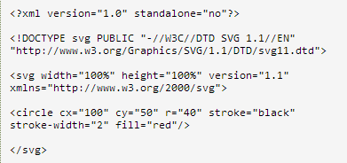

XML
note
to George /to 头尾标签
from John /from 头尾标签
heading Reminder /heading 头尾标签
body Don't forget the meeting! /body 头尾标签
/note 头尾标签
XML 被设计用来传输和存储数据。|| XML 是一种标记语言，很类似 HTML
SVG 是使用 XML 来描述二维图形和绘图程序的语言。
个人理解一个同为canvar一样，原理相同，当然需要活学活用。
当然需要对 HTML XML基础 基本的了解：
说一个实例

Canvas 对象 Canvas 对象表示一个 HTML 画布元素 - canvas。它没有自己的行为，
但是定义了一个 API 支持脚本化客户端绘图操作。你可以直接在该对象上指定宽度和高度，
但是，其大多数功能都可以通过 CanvasRenderingContext2D 对象获得。
这是通过 Canvas 对象的 getContext() 方法并且把直接量字符串 "2d" 作为唯一的参数传递给它而获得的。
canvas 标记在 Safari 1.3 中引入，在制作此参考页时，它在 Firefox 1.5 和 Opera 9 中也
得到了支持。在 IE 中，canvas 标记及其 API 可以使用位于 excanvas.sourceforge.net
的 ExplorerCanvas 开源项目来模拟
绘制猫头
jj.lineWidth = 10; //线宽
jj.beginPath(); //开始路径
jj.strokeStyle = "#33190c"; //边框线（笔触）的颜色
jj.fillStyle = "#ffffd9"; //填充的颜色
jj.moveTo(280, 6); //从开始到制定的坐标
jj.bezierCurveTo(420, 0, 535, 154, 541, 166); //绘制一条三次贝塞尔曲线
jj.lineTo(546, 180); //开始一条路径，移动到位置 546,180
jj.bezierCurveTo(584, 304, 530, 368, 432, 392); //
jj.quadraticCurveTo(270, 460, 90, 372); //绘制一条二次贝塞尔曲线
jj.quadraticCurveTo(38, 324, 34, 314); //
jj.quadraticCurveTo(6, 268, 38, 174); //
jj.quadraticCurveTo(160, 8, 280, 6); //
jj.closePath(); //绘制一条路径，然后绘制线条以返回开始点，理解为闭合
jj.fill(); //填充
jj.stroke(); //绘制当前路径